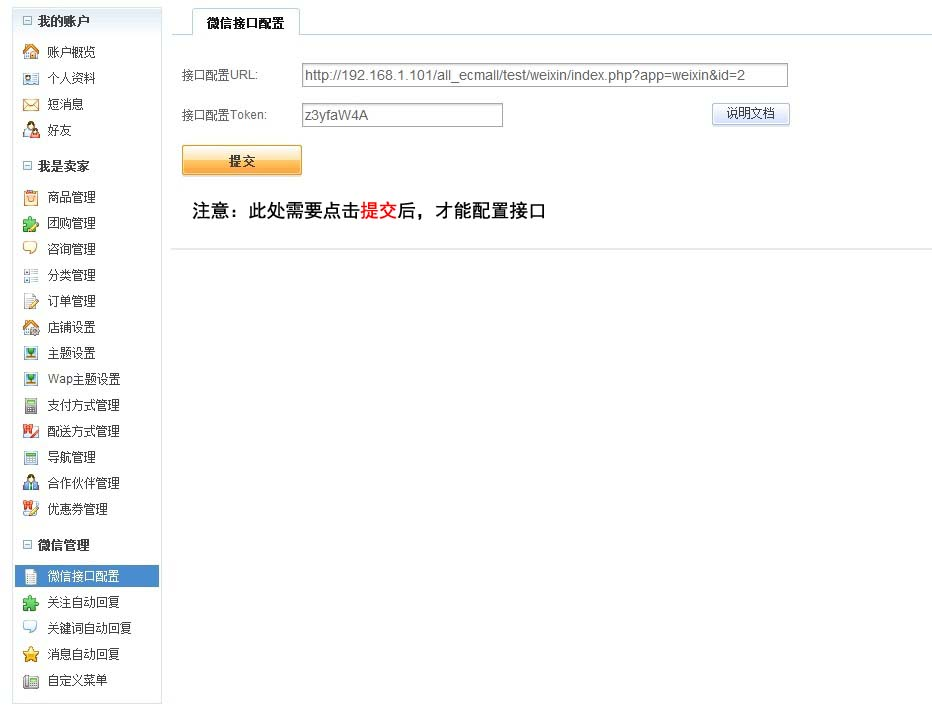

如何为微信公众号配置接口？
请务必认真阅读以下2步内容，才能更有效的完成配置工作，有疑问的请联系旺旺提问。
第一步、在网站上设置你的Token。
1、店铺管理 → 微信管理 → 微信接口配置→ 查看分配的Token→ 提交

第二步、到微信公众平台设置接口。
1、登录 微信公众平台（http://mp.weixin.qq.com/），进行身份认证，填写信息，提交身份证。
认证后，点击高级功能 → 进入开发模式

2、点击"成为开发者"按钮

3、填写接口配置信息
第一步 在网站上查看到的URL 和 Token

4、确认开启
5、店铺管理 → 微信管理 → 关注自动回复→ 设置信息